Work the Workflow
The purpose of this chapter is to highlight important considerations when it comes to setting up existing or new Workflow Profiles and how specific workflow steps should be used. At first, the concept of a workflow can be a little daunting, but you may change your mind once you understand its primary function. This chapter covers workflow considerations, especially if you are tasked with expanding functionalities within OneStream.
Workflow Profiles are foundational to OneStream, such that they are covered extensively in the OneStream Foundation Handbook and the Design and Reference Guide. The question, then, is why does this chapter exist?
This chapter exists to re-arrange the information in a way that makes sense to the administrator. For example, what happens if I set up a workflow as X instead of Y? The answer may not be obvious, so we have it covered here. Thus, the organization of this chapter is as follows:
Background information on the workflow engine and workflow Data Unit (also known as workflow clusters).
The importance of workflow suffixes, and where you can find and apply them.
Workflow Profile types, and how each one can be used.
Examples of using the process step, and ways to set up calculation definitions.
Security naming recommendations for Workflow Profile groups.
Workflow channels and troubleshooting workflow channels.
Locking workflows.
Common tips and troubleshooting for workflows.
Work the Workflow
Background
Workflow Engine and Workflow Data Units are methods within OneStream that control how data is loaded into the application. For more information, there is a great section in the Design and Reference Guide that covers Workflow Profile data loading behaviors.
Work the Workflow › Background
Workflow Engine
An extremely important concept in OneStream is that the workflow engine orchestrates all input data entering the application; it is responsible for clearing, loading, and locking all incoming data. Data for any Origin member (Import, Forms, and Adjustments) must pass through the workflow engine, and is always tagged with the workflow that owns it.
When data is loaded to Stage via an Import workflow, the data is tagged with your active Workflow POV. To see the data tagged to the Workflow POV, you can drill down into a cell in OneStream, right-click on the intersection, and select Load Results For Imported Cell to see which workflow the cell was loaded from. In Figure 6.1, you can see that this cell came from loading two separate workflows. You can use the Navigate to Source Data button to navigate to these workflows directly.
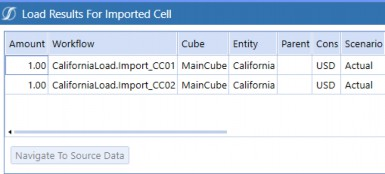
Figure 6.1
It is not obvious, but all inputted forms and adjustment data are also tagged with an owning workflow. This is true regardless of whether you used a Cube View that was not linked to any workflows, or even an Excel submission template.
In Figure 6.2, below, the ownership is determined by looking at each intersection’s entity, and seeing which workflow that entity is assigned to. Again, you can drill down into a cell, select Audit History For Forms or Adjustment Cell, and then click the View All Impacted Workflow Units button.
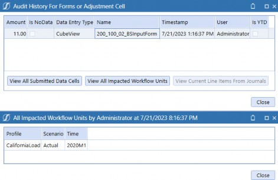
Figure 6.2
This is important to point out because it is often a misconception that workflows are just a way to create a process flow for users. Workflows are more than that; they serve as the backbone of OneStream. Workflows let you impose strict controls on what data can enter your system (preventing the dreaded garbage-in, garbage-out model). They ensure data integrity because you can track down and flush stale data when loading new datasets and lock down datasets to prevent them from being accidentally modified. Finally, they give you a seamless audit trail, so you can always figure out where your data came from.
Work the Workflow › Background
Workflow Data Units (Workflow Clusters)
This section covers the three basic Data Units that OneStream uses to partition data when performing any sort of work:
Cube Data Unit
Workflow Data Unit
Workflow Channel Data Unit
The concept of Data Units serves as an important foundation for the remaining sections of this workflow chapter. It is integral that you understand which actions affect which types of Data Units, so you can be sure you are not clearing more data than expected, or you are only calculating the subset of data that you want to affect.
The Cube Data Unit is the largest unit of work and is comprised of the six Data Unit dimensions (Level 1): Cube, Entity, Parent, Consolidation, Scenario, and Time. The finance engine acts on this level, clearing and loading by entire cube Data Units.
There is a more granular Data Unit called the Workflow Data Unit (also known as workflow cluster), which also includes the Account, Flow, View, Origin, and Intercompany dimensions (Level 2). Earlier, we discussed how all input data is tagged with your active Workflow POV. This POV includes your workflow name, Scenario, and Time, which comprises a Workflow Cluster Primary Key. When you initiate a load from an Import workflow, the workflow engine will first find and clear any previously loaded data with the same workflow cluster key.
Finally, the Workflow Channel Data Unit builds on the workflow Data Unit even further by including a User-Defined dimension (Level 3). Each application can only use a single dimension for workflow channels. By default, workflow channels will apply to accounts. If you select a different dimension for workflow channels, then the workflow channels will also apply to that dimension.
Figure 6.3 is an illustrative example of how the dimensions are sorted by the cube Data Unit, workflow Data Unit, and workflow channel Data Unit.
Level 1 Cube Data Unit (Cube, Entity, Parent, Consolidation, Scenario, Time) | Level 2 Workflow Data Unit (Account, Flow, View, Origin, Intercompany) | Level 3 Workflow Channel Data Unit (UD1-UD8) |
|---|---|---|
| Cb#MgmtRpt E#Entity1 P#Top C#Local S#Actual T#20XXM1 | A#100 F#EndBalInput V#YTD O#Import IC#None | Example: UD8#None |
Figure 6.3
When the workflow engine loads data, it will go through these Data Units and your workflow configuration to determine how the data set should be processed (such as cleared and/or overridden). We discuss these topics further in the workflow channels section of this chapter.
Work the Workflow
Workflow Suffixes
Workflow suffixes are text strings added to the Scenario Types within OneStream. This section covers the functionalities that adding workflow suffixes will provide, such as streamlining your Workflow Profiles by Scenario Type and providing entity assignments by Scenario Type. We will walk through examples of results when implementing workflow suffixes.
Work the Workflow › Workflow Suffixes
Top Cube Settings
First, workflow suffixes are applied on cubes that have Is Top Level Cube For Workflow set as True. To find this setting, you will need to navigate from the Application tab and click on Cubes. Select the relevant cube, which in Figure 6.4 is Corporate, and click on the Cube Properties tab.
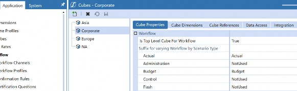
Figure 6.4
In Figure 6.4, notice that workflow suffixes are already assigned to the Scenario Types. For example, Actual has an Actual suffix, while Administration has a NotUsed suffix.
Ensure that your application has workflow suffixes assigned; in other words, any Scenario Types that are in use should not be blank. You will notice in Figure 6.4 that NotUsed is assigned to some Scenario Types like Control and Flash – this is optional for Scenario Types not in use.
Alternatively, you can leave unused Scenario Types blank until you need to use them, at which point, I recommend adding a relevant suffix.
By adding these suffixes, you create a layer of organization for your Workflow Profiles where you can toggle by suffix. For example, if you want one workflow hierarchy dedicated to consolidation, accounts reconciliation, or some other process that is heavily reliant on Actuals data, then tag all the relevant Scenario Types with Actual. By tagging your Scenario Types with the appropriate suffix, you will then be able to see these Scenario Types under the relevant cube root Workflow Profile name.
This is a benefit as you are now specifically choosing which Scenario Types should be valid per cube root Workflow Profile name. Said differently, without the suffixes, you end up having to click through every Scenario Type and somehow track which steps are valid for which Scenario Types.
Work the Workflow › Workflow Suffixes
Cube Root Workflow Profile Name
A cube root Workflow Profile name is created based on the suffixes entered in the Cube Properties of your top-level Cube. In this section, we will walk through the steps and outcomes when updating the suffixes.
Let’s assume that we have already created a Workflow Profile hierarchy for Actual, and we now want to create another workflow hierarchy dedicated to Budget.
When you want to create a new cube root Workflow Profile name, the system pulls in the suffixes that you defined from Cube Properties for the cube that has True set for Is Top Level Cube For Workflow. Figure 6.4 showed the
Corporatecube as the top-level cube and the suffixes are Actual, Budget and NotUsed. Thus, in Figure 6.5, the selection choices will be the cube name plus the suffixes, which in our case are Corporate_Budget, Corporate_Forecast, and Corporate_NotUsed.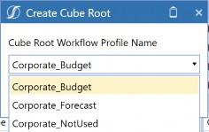
Figure 6.5
As such, when you are ready and need another workflow hierarchy for a different Scenario Type, you are able to do so. From Figure 6.5. I can create a Corporate_Budget as another cube root Workflow Profile. The result is Figure 6.6.
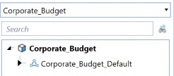
Figure 6.6
I can now manage and separate two completely different processes for workflow and view the relevant Scenario Types associated with the given Actual and Budget workflow suffix. This is the benefit mentioned in the previous section; you can toggle between the suffixes and view just the Scenario Types associated with that suffix.
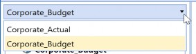
Figure 6.7
The distinction between the workflow hierarchies via the suffixes will allow for entity assignment flexibility. Entity assignment is important as it can be used to control who should be handling what entities throughout the workflow process.
Work the Workflow › Workflow Suffixes
Suffixes Provides Entity Assignment Flexibility
Assigning suffixes provides you with greater flexibility for the entity assignment as you can vary your entity assignments among your cube root Workflow Profiles. This section covers an example of how the same entity is available between two cube root Workflow Profiles.
In Figure 6.8, notice in the Corporate_Actual structure that E101 is already assigned.
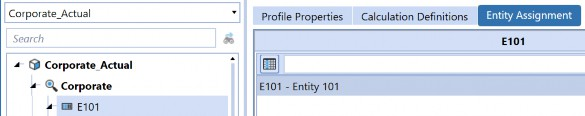
Figure 6.8
Now, when I go to Corporate_Budget, notice that E101 is also available to assign (Figure 6.9).
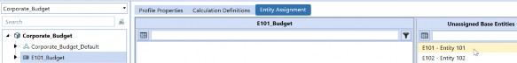
Figure 6.9
Without suffixes, you might run into a situation where you are limited to how entities can be assigned across your business processes. For example, if you have your consolidation team in OneStream, they may be the only folks who should handle all entities, and perhaps you have all the entities assigned to their Workflow Profiles. Then, if you try to incorporate your budget team into OneStream and the budget team is responsible for only a handful of entities, you will not be able to use the same entities if both Actual and Budget Scenario Types are using the same cube root Workflow Profile. You might now be wondering how to update your suffixes… we will cover this over the next sections!
Work the Workflow › Workflow Suffixes
Not Starting Out with a Suffix and Now You Want to Add Suffixes
If you notice that your current application has Scenario Types as blank, you may be wondering about the repercussions. As already mentioned, a lack of suffixes becomes problematic from the administrator’s perspective when you start to expand the application to enable more capabilities involving the use of entity assignments. Furthermore, as an administrator, you will have to keep track of which Scenario Type to update your workflows with, as you may not be able to use the Default Scenario Type.
For example, if you have a Load_Entities import step for Actual and Budget processes in the same cube root Workflow Profile, then you will have to be explicit on your Actual and Budget Scenario Types for security groups and settings.
Users will not necessarily see the impact, but you will whenever you want to update your Workflow Profiles. To add suffixes later, especially if the Scenario Type already has data, you will receive an error message (Figure 6.10) when you try to update directly on Cube Properties.
Let’s say I have data in a scenario member tagged with the Administration Scenario Type and my Administration does not have a suffix. When I try to add a suffix of _Actual, I will receive an error message.
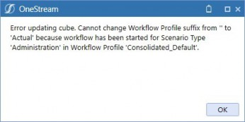
Figure 6.10
So, you may be wondering, how do I get around this error and add a suffix to a Scenario Type that has data? We have a few options to handle this:
Clear everything in these Scenario Types and add your suffixes to the Scenario Types, then reload to the Scenario Types.
Add suffixes to any remaining Scenario Types that do not have data. You will simply have to make a note, going forward, that for the Scenario Types that do have data, you will have to manage them all under the same cube root Workflow Profile.
Go to the scenario members with the affected Scenario Type and change the Scenario Type to another Scenario Type that does not have data. Go back to Cube Properties and update the Scenario Type’s suffix. Return to the scenario member and add the original Scenario Type.
a. In our example, Figure 6.11, the Administration Scenario Type does not have a suffix, but we have data loaded to it.
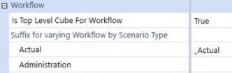
Figure 6.11
I try to add _Actual to Administration, and I get the error message seen in Figure 6.10.
I go to my scenario member, Actual, which is tagged as Administration in Figure 6.12, and change it to a Scenario Type that does not have data (e.g., Forecast) as reflected in Figure 6.13.
Figure 6.12
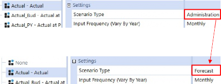
Figure 6.13
d. Now I go back to Cube Properties and update the Scenario Type’s suffix to
_Actual, and the update is successful.
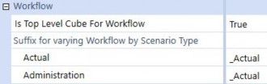
Figure 6.14
e. I return to my scenario member, Actual, and update the Scenario Type from
Forecast to Administration.
You might be wondering, “The last option is the preferred way, right?” and the answer is the classic “It depends!” There are pros and cons to each option, reflected in the following table, and – depending on your business needs and where you are in your process – a different option may be preferable.
| Options | Pros | Cons |
|---|---|---|
| Clear everything in these Scenario Types, add your suffixes to the Scenario Types, and reload to the Scenario Types. | Start anew with the suffix setup for all Scenario Types. | Depending on the volume of data to reload, a complete reload could take time. |
| Add suffixes to any remaining Scenario Types that do not have data. | Allows remaining unused Scenario Types to be used for future functionalities. | Existing Workflow Profile maintenance may be higher if several Scenario Types have data. |
| Go to the scenario members with the affected Scenario Type and change the Scenario Type to another Scenario Type that does not have data. | Does not need a data clear or data reload. You can still drill down from the cube and get to the load file/load results for the imported cell. | All existing scenarios referencing the Scenario Type must be updated to another Scenario Type that does not have data, and then must be updated back after the suffix is added. |
Figure 6.15
Work the Workflow › Workflow Suffixes
Adding Existing Suffixes to New Scenario Types
You can add suffixes and update (or change) suffixes to Scenario Types that do not have data. By adding an existing suffix for a new Scenario Type, the new Scenario Type becomes an option for your workflow hierarchy. In the example below, I’ll update the Administration Scenario Type from NotUsed in Figure 6.16 to Actual in Figure 6.17.
Figure 6.16
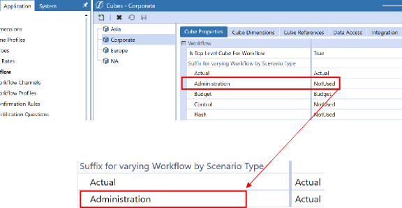
Figure 6.17
Figure 6.18 represents the before change (Administration as NotUsed), in which the Administration was not initially part of the Corporate_Actual cube root Workflow Profile.
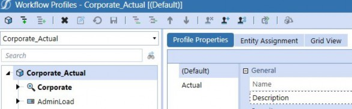
Figure 6.18
After updating Administration to Actual, when I navigate to my Workflow Profile and select my cube root Workflow Profile of Corporate_Actual, Administration is now part of the selection.
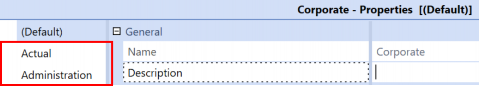
Figure 6.19
If I want to undo this, I can, because the Administration Scenario Type does not have data. I’ll go back and update Administration to SomethingElse.
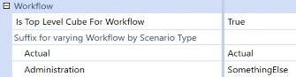
Figure 6.20
Then, returning to my Corporate_Actual cube root Workflow Profile, Administration is no longer part of the selection, as shown in Figure 6.21.
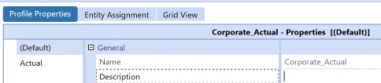
Figure 6.21
Work the Workflow
Workflow Profile Types
Workflow Profile types in OneStream are base input, parent input, and review. Base inputs are primarily used for imports, form inputs and journals; parent inputs are dedicated parent inputs (e.g., inputs to parent entities, which will primarily be journal entries made to the parent entity); and then review would be for review purposes.
Work the Workflow › Workflow Profile Types
Base Input
Base inputs, by default, contain at least the Import, Forms, and Adj steps. Base input represents the three methods in which we can get data into OneStream: data load, user input, or journals. This section will cover the common types of loads on – specifically – the Import step, such as a central load, entity-specific load, and then a combination load.
Work the Workflow › Workflow Profile Types › Base Input
Central Loads
A central load refers to an import that targets all the entities. In other words, it’s a designated step to load data for the entire organization. For this type of load, you should ensure that Load Unrelated Entities = True, and it is recommended to set the specific step’s workflow name to either Central Import, or Central Form Input, or central journal input. In this case, you would not necessarily need to assign all the entities to this step unless you have a specific business case to do so.
Work the Workflow › Workflow Profile Types › Base Input
Entity-Specific Loads
Entity-specific loads commonly require entity assignments, such that the user who accesses the import step would only be able to load that assignment of entities. When entity-specific loads are present, it is important to consider the use of workflow suffixes, which we covered in the earlier sections of this chapter.
| Note: Entity assignment only allows for one base input. If you assign Entity 1 to Base Input 1, Entity 1 will no longer be available as a valid selection for any remaining base inputs you have in your given cube root Workflow Profile structure. This also allows for the “locking” of data; once a profile step with entity assignments is marked complete and locked, this prevents further user input for those entities. |
Work the Workflow › Workflow Profile Types › Base Input
Combination of Central and Specific Loads
This section covers instances where you have several import steps where one handles the load of all entities, and the remaining steps are subsets of entities. Depending on how you answer the questions below, you might want to consider the use of workflow channels, and you can refer to the Workflow Channels section of this chapter.
This is where things get fun. Here are some questions to answer when determining how you could design your workflow:
1. Between the central load and specific loads, are there intersections of account/entity that could overlap? And, if so, which members overlap? What dimension is the differentiator?
a. Overlap, in this sense, means data records that have the same members. For example, one record could be Entity 1 and Account 100 with Line of Business as Operations. Another record could be Entity 1 and Account 100 with a Line of Business as Non-Operating. These two records have overlap, referencing both Entity 1 and Account 100.
If there are identified overlapping intersections, which import should the system take (e.g., last load wins)? Or do we need all these intersections (in other words, no load should override or clear the other; we need to append)?
Append refers to adding on to the existing records.
Should we consider workflow channels, or do we need to rethink how we set up the Workflow Profile structure?
To which import step will you assign the entities?
I’ll walk through the thought process behind the above questions, and how these questions were addressed in the below real-life example.
A client provides a data file and – under certain compliance requirements – the load needs to be completed within a specific time frame. Due to the sheer volume of data, a technical decision was made to parse the file through designated Workflow Profiles with assigned entities. This was fine and dandy until, one day, the client decided to add additional functionalities that included a detailed slice of accounts data (e.g., think PP&E with some of the activity explained in addition to the original load to ending balance). The following day, someone commented, “Hey, what happened to the data loaded yesterday? The data’s disappeared.”
1. Since the client had already confirmed that the original import worked as expected via data validation, and data disappeared, the situation suggested that there were overlapping records, which the system was clearing based on which import step was recently loaded.
a. The overlap was entities and the specific PP&E accounts. The differentiating dimensions were the UD dimensions and Flow.
2. The next step was to determine whether clearing should be the expected behavior, going forward, between the two import processes. The client confirmed that both import processes needed to have both sets of data, which meant no clearing, and we were – in fact – “appending”.
a. The next assessment was whether it was possible to re-arrange the import steps, which for the users’ specific responsibilities did not make sense. Because the differentiator was the UD and Flow dimensions, the recommended step was to implement Workflow Channels using a specific UD dimension.
3. Was it possible to reassign the entities in the workflow structure? The answer was no, which furthered our recommendation to implement workflow channels.
Work the Workflow › Workflow Profile Types › Base Input
Load Overlapped Siblings
The Load Overlapped Siblings setting is specifically found on the base input step. It is a boolean setting of True or False. If it is set to True, the system checks for overlapping Data Units. If it is set to False, the last processed channel will overwrite the prior load. Refer to the Design and Reference Guide – it has a great section that describes Workflow Profile data loading behaviors!
You want this setting as True if you have multiple steps under your given base input and you anticipate and/or know multiple import, forms, or adj will have overlapping Data Units. Otherwise, if you have one base input with several import steps, in which each import is distinct (e.g., Import 1 is always Entity 1, 2, 3; Import 2 is always Entity 4, 5, 6), then set the Load Overlapped Siblings to False, as this will improve performance speeds.
Work the Workflow › Workflow Profile Types
Parent Input
This is specifically for topside adjustments and a parent input step helps differentiate things – especially if there are inputs for forms that are at the parent entity level. By parent entity level, I truly mean the parent entity, where you want that parent to reflect X amount regardless of the base members. Refer to the Business as “Usual” chapter in this book, where we cover using a base to represent the parent (versus at the parent level).
Work the Workflow › Workflow Profile Types
Difference Between Base Input and Parent Input
Base input gives you the standard Import, Forms, Adj; parent input, by comparison, only gives you Forms and Adj. Why? Parent input assumes you want to input data to a parent entity, which you can do as a form input or a journal, but not as a data load.
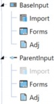
Figure 6.22
Work the Workflow › Workflow Profile Types
Review
Literally, a step to review, confirm, and certify the results. The review profile type can also be used to group the base inputs and parent inputs in a logical structure.
There is a property called Named Dependents on the review Workflow Profile type. You can set this property to include non-descendant Workflow Profile entities. A named dependent relationship is used to accommodate situations such as having a single base input profile type used to load data for the entire organization, but the individuals responsible for a subset of those entities have a different workflow and sign-off process. Thus, you can have a review step that depends on a different workflow.
Work the Workflow
Default Workflow
Do you see Golfstream_Default with the triangle icon (Figure 6.23)? Do not load data to this. It’s mentioned in the out-of-the-box Design and Reference Guide, but I’ll say it here, too; its sole job is to establish the default relationship between the workflow structure and unassigned entity members within the cube that the cube root profile was created to control. To prevent inadvertent human error, I recommend the following:
1. Leverage a DO_NOT_USE structure if you don’t already have one. This can be used for default Workflow Profiles, discontinued Workflow Profiles, archives, etc.
a. If you have historical entities, consider adding the structure under DO_NOT_USE with the assigned historical entities. In other words, do not let the entities remain unassigned in the _Default profile.
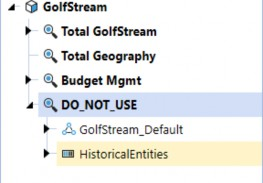
Figure 6.23
2. If you ever get an error on the default Workflow Profile (e.g., when copying data via a data management job), check your entity assignments. If entities were in use at any point and are no longer used, reassign these entities to an archive or historical workflow parent (e.g., HistoricalEntities in the example above).
a. Default Workflow Profile should only be used for new entities or entities that have never been assigned, and which do not need to be assigned to other Workflow Profile steps. In other words, if the entity started out in default, was moved to a step, and subsequently discontinued, then depending on the workflow setup, either the entire step gets moved to under DO_NOT_USE or the Entity is reassigned to the HistoricalEntities step.
Work the Workflow
Does a Profile Need a Process?
Process indicates to the system that additional calculations need to be run on the given Workflow Profile step. These processes include consolidate, translate, calculate, and custom calculations.
To level set, the process step is part of the Workflow Profile name. You could have an import step where you set the Workflow Profile name as the typical Import, Validate, Load, or you could set it up with Import, Validate, Process instead.
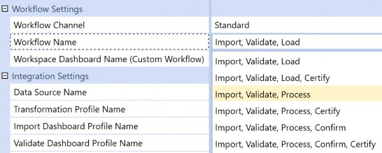
Figure 6.24
Does a profile need a process step? Most likely, yes, if users need to see the calculated, translated, or consolidated data for their entities, such as:
Utilize the IC matching report.
Users need to run confirmation rules.
Run data management jobs (e.g., custom calculate, like seeding).
Consolidate with the click of a button.
Work the Workflow › Does a Profile Need a Process?
Calculation Definitions
Calculation Definitions is a tab found on the base input Workflow Profile. This is where you set up your consolidate, translate, calculate, or your custom calculations. This section will cover a standard setup, which I am defining as the out-of-the-box selections available to you when you create a new calculation definition row, and custom, where you might have to use a custom rule attached to a data management sequence.
Work the Workflow › Does a Profile Need a Process? › Calculation Definitions
Standard
I am defining standard as the standard functionalities provided when you add a new row to calculation definitions. These standard functionalities include:
Entity: select the entity you want to be processed.
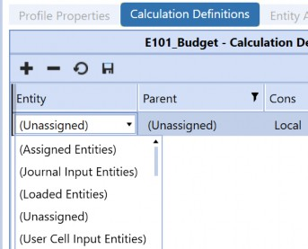
Figure 6.25
Parent: if relevant. This might be useful to define in situations where you have base entities under multiple different parents or hierarchies in your main entity dimension.
Cons: select your consolidation member. The most common I see include local or a reporting currency such as USD.
Calc Type: what you want run for the row.
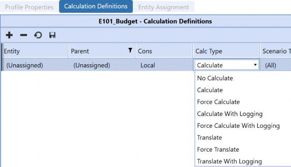
Figure 6.26
Scenario Type Filter: if you only want the process to run on specific Scenario Types.
Confirmed: you must check this if you want your confirmation rules assigned to this workflow to be run.
Order: if there is an order of operations associated with your calculation definitions for this specific Workflow Profile type.
Filter Value: commonly used for custom processes, like triggering a data management sequence, as explained in the next section.
Work the Workflow › Does a Profile Need a Process? › Calculation Definitions
Custom
I am defining custom as a process that is not considered “out-of-the-box” or, in other words, additional logic is needed. For these instances, we commonly leverage an event handler such as a DataQualityEventHandler. This section will cover a high-level walkthrough on a basic setup to associate a data management step to your calculation definition.
Create a DataQualityEventHandler rule in the Extensibility Rules folder. You will have to specifically select DataQualityEventHandler.
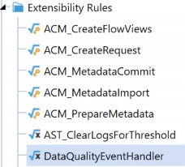
Figure 6.27
Create your business rule. I have an example, below, where I want to use a custom calculation that should only run for calculation definitions where I have the calc type defined as
No Calculate.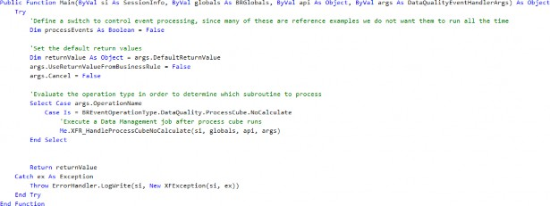
Figure 6.28
In my private sub, called
XFR_HandleProcessCubeNoCalculate: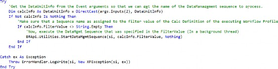
Figure 6.29
Then, I go into Data Management, create my sequence, and assign any rules that need to be run for a specific workflow. For example, I have a Workflow step where I want to copy journals from one cube to another.
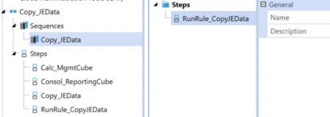
Figure 6.30
Then, in my Calculation Definitions, I update the Filter Value to be the name of the data management sequence,
Copy_JEData.
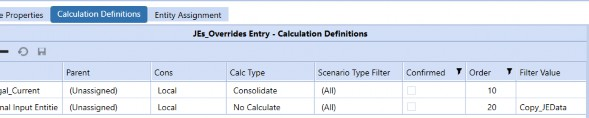
Figure 6.31
Work the Workflow › Does a Profile Need a Process?
If I Set My Calculation Definition to Consolidate and Confirmed, Does My Workflow Name Really Need to Have Process?
Your calculation definition will not run if Process is not explicitly defined in your workflow name. It is mentioned in the Reference Guide, and I will mention it here again. Calculation definitions determine the type of calculation or consolidation that will occur when a user selects Process Cube. You only have Process Cube if your workflow name has Process as part of it (as shown in Figure 6.32). The confirmed check box only indicates to the system what entities should be run by the confirmation rules.
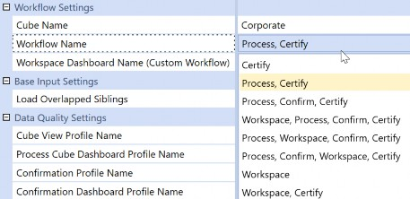
Figure 6.32
Work the Workflow
Workflow Security Groups
Security is everyone’s “favorite”. At a high level, you will see a dedicated security section for your
Workflow Profile step. In layman’s terms:
Access Group: can view this step from OnePlace.
Maintenance Group: who should edit the properties associated with this step. I hope you set this to administrators…
Workflow Execution Group: the group that completes the tasks in the workflow. Commonly, access group and workflow execution group are the same but, again, this property exists to handle exceptions.
Certification SignOff Group: signs off on the workflow.
| Note: Nest security groups where possible – less is more! Don’t overengineer security! |
For those who are on versions 8.0+, there are additional capabilities related to the use of journals. Now, you can specify whether users are able to post or approve their own journals or require the journal template associated with the step.
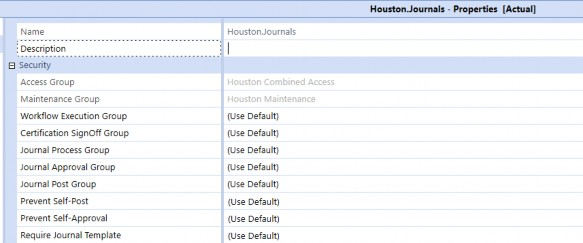
Figure 6.33
For the sake of simplicity, here is a general or suggested naming convention for workflow to help you keep security a little more organized:
Workflow prefix examples
WF_Access= Workflow AccessWF_Execute_= Workflow ExecutionWF_Certify= Workflow CertificationJ_Process= Journal ProcessJ_Approve= Journal ApproveJ_Post= Journal Post
Entity prefix examples
o E_View_ = read group for given entity (e.g., E_View_Frankfurt)
E_Write_= write group for given entity
Scenario prefix examples
o S_ = denotes scenario-specific security (e.g., S_Write)
Work the Workflow
Workflow Channels
Workflow channels are primarily used to further define how to handle clear, load, and lock data to a more granular level. Workflow channels are created as what I’d like to think of as “labels” that represent some grouping between some base input step (Import, Forms, Adj) and metadata such as accounts or UD members. You can create these “labels” in workflow channels (Application > Workflow > Workflow Channels).
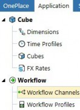
Figure 6.34
Out-of-the-box, we have Standard, NoDataLock, and AllChannelInput as workflow channels.
Standard: this is the default for every Workflow Profile step creation. This assumes you have not implemented workflow channels.
NoDataLock: this is a setting available on the dimensions. In other words, you will not find this as an option for Workflow Profile steps.
NoDataLock takes the specified account or UD member out of the workflow process. You are telling the system that this member can be used across multiple workflow Import/Forms/Adj steps.
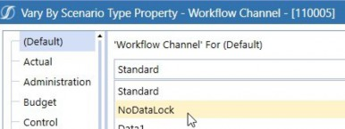
Figure 6.35
AllChannelInput: this is the
NoDataLockequivalent for the Workflow Profile step. In other words, you will not find this as an option on dimension properties.
o Limits the workflow process on certain metadata (e.g., entity) if another workflow step has a specific channel assigned. The AllChannelInput focuses on the workflow Data Unit (Level 2) but looks specifically at the Origin dimension.
Work the Workflow › Workflow Channels
When to Consider Using an Account Workflow Channel
You may want to use workflow channels on accounts if there is a need to lock certain accounts based on your close days or overall process (not just limited to consolidation and close, you could have very specific steps on the planning side!).
Account Channel example: on day 3 of close, you want to complete the trial balance and lock it down for adjustments, but you still want the ability to submit the statistical accounts by day 5 (both trial balance and statistical accounts are in the Account dimension). You would set up two workflow channels:
Supplemental accounts workflow channel
Trial balance workflow channel
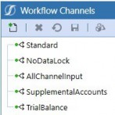
Figure 6.36
In the Account dimension, we would assign the TrialBalance workflow channel to the base balance sheet and P&L accounts, and supplemental accounts workflow channel to the base supplemental account members.
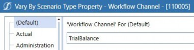
Figure 6.37
Then, on the Workflow Profiles, the workflow channels would be assigned to the relevant step.
Let’s say we load in the trial balance and supplemental accounts through an import step.
The trial balance import step would have workflow channel,
TrialBalance
assigned.
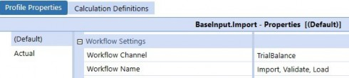
Figure 6.38
o The supplemental import step would have workflow channel, Supplemental, assigned.
Let’s say users then go in and review the output and make additional adjustments – whether through forms or journals – and there are no intersection restrictions for users to make these updates.
o Forms and Adj steps would have AllChannelInput assigned.
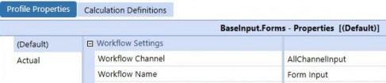
Figure 6.39
Work the Workflow › Workflow Channels
When to Consider Using a UD Workflow Channel
Will the application contain several integrations and/or Import/Forms/Adj steps that share the same intersections in the cube Data Unit (Level 1) and workflow Data Unit (Level 2)?
Level 1 Cube Data Unit (Cube, Entity, Parent, Consolidation, Scenario, Time) | Level 2 Workflow Data Unit (Account, Flow, View, Origin, Intercompany) | Level 3 Workflow Channel Data Unit (UD1-UD8) |
|---|---|---|
| Cb#MgmtRpt E#Entity1 P#Top C#Local S#Actual T#20XXM1 | A#100 F#EndBalInput V#YTD O#Import IC#None | Example: UD8#None |
Figure 6.3 (shown again)
If yes, then will a UD dimension be used to differentiate the data types or data sources?
If the answer to both of the above is yes, you may want to consider using channels, more specifically, a UD workflow channel. If you do consider using a UD workflow channel, it is very important to be mindful of which UD you ultimately end up selecting because setting a UD for workflow channels will be application-wide and cannot vary among cubes and Scenario Types. The use of a UD workflow channel is to control data input access and does not allow you to certify up to the workflow hierarchy by channel.
Work the Workflow › Workflow Channels
Where to Get Started
There are three main areas to apply your workflow channel updates: Workflow Channels, Application Properties (especially if you decide to use a UD channel), and your account and/or UD metadata.
Work the Workflow › Workflow Channels › Where to Get Started
General Account Channel versus UD Channel Setup
In general, to set up an account workflow channel:
Create your workflow channels as part of Application > Workflow > Workflow Channels.
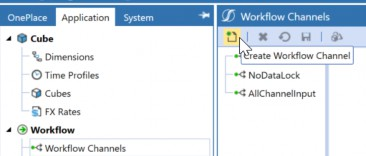
Figure 6.40
Apply the workflow channels to the relevant account members.
Apply the workflow channels to Workflow Profile steps. In general, to set up a UD workflow channel:
Create your workflow channels as part of Application > Workflow > Workflow Channels.
Go to Application Properties > UD Dimension Type for Workflow Channels.
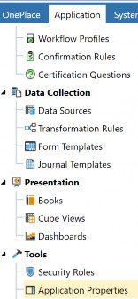
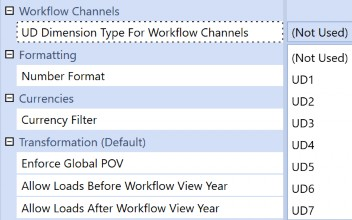
Figure 6.41
Apply the workflow channels to the relevant UD members.
Apply the NoDataLock workflow channel to the relevant account members.
Apply the workflow channels to the Workflow Profile steps.
Note: Remember, if you opted for a UD workflow channel, you would need to ensure that all accounts have workflow channel set to NoDataLock and that your members in your UD have the relevant workflow channel assigned. |
Work the Workflow › Workflow Channels
Workflow Channel Use Cases
This section covers various Workflow Profile organizations and settings with workflow channels. Each case covers an expected behavior depending on the given Workflow Profile setup for records sharing the same cube Data Unit and workflow Data Unit, or the same cube Data Unit but different workflow Data Unit:
When there are multiple import steps under the same base input.
Cube Data Unit and workflow Data Unit are the same for these import steps with/without entity assignments.
Cube Data Unit is the same for these import steps but the workflow Data Unit has different accounts.
Cube Data Unit is the same for these import steps but the workflow Data Unit has the same accounts and a different Flow member.
When there are multiple base inputs.
Cube Data Unit and workflow Data Unit combinations are the same for the import step that is under each of the base input Workflow Profiles.
Cube Data Unit is the same but the workflow Data Unit has different accounts.
Cube Data Unit is the same but the workflow Data Unit has the same accounts and a different Flow member.
Depending on the setup related to the workflow step itself (e.g., Load Overlap Siblings = True, workflow channel setting, etc.), the creation of workflow channels, or the workflow channel setting on the relevant account or UD member, the result is to either keep records from all the imports, or to only keep the loaded records from the latest import.
Work the Workflow › Workflow Channels › Workflow Channel Use Cases
Imports of the Same Base Input
If we have the following Workflow Profile setup, where we have multiple imports under the same base input, then:
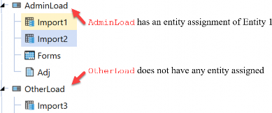
Figure 6.42
Work the Workflow › Workflow Channels › Workflow Channel Use Cases › Imports of the Same Base Input
Cube Data Unit and Workflow Data Unit are the Same With or Without Entity Assignment
If the workflow channel is the same for WF1 (Import1) and WF2 (Import2), and the cube Data Unit and workflow Data Unit combinations are the same, the system will load both intersections into the cube, regardless of whether there are entity assignments.
| Standard Workflow Channel | ||||||||
|---|---|---|---|---|---|---|---|---|
| WF1 (Import1) | WF2 (Import2) | End Result (Keep Both) | ||||||
| Symbol | Member | Symbol | Member | Symbol | Member | Member | ||
| E# | Entity1 | E# | Entity1 | E# | Entity1 | Entity1 | ||
| C# | Local | C# | Local | C# | Local | Local | ||
| S# | Actual | S# | Actual | S# | Actual | Actual | ||
| T# | 20XXM1 | T# | 20XXM1 | T# | 20XXM1 | 20XXM1 | ||
| A# | 100 | A# | 100 | A# | 100 | 100 | ||
| F# | EndBalInput | F# | EndBalInput | F# | EndBalInput | EndBalInput | ||
| V# | YTD | V# | YTD | V# | YTD | YTD | ||
| O# | Import | O# | Import | O# | Import | Import | ||
| IC# | None | IC# | None | IC# | None | None | ||
| U1# | 0000 | U1# | 0000 | U1# | 000 | 000 | ||
| U2# | 000 | U2# | 000 | U2# | 000 | 000 | ||
| U3# | 000 | U3# | 000 | U3# | 000 | 000 | ||
| U4# | Data1 | U4# | Data2 | U4# | Data1 | Data2 | ||
| U5# | None | U5# | None | U5# | None | None | ||
| U6# | None | U6# | None | U6# | None | None | ||
| U7# | None | U7# | None | U7# | None | None | ||
| Standard Workflow Channel | ||||||||
|---|---|---|---|---|---|---|---|---|
| U8# | None | U8# | None | U8# | None | None | ||
| Amount | 10 | Amount | 15 | Amount | 10 | 15 | ||
Figure 6.43
Using the same workflow structure presented in Figure 6.42, Import1 will represent WF1. I load the WF1 record from Figure 6.43 into OneStream successfully, as presented in Figure 6.44.
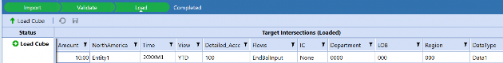
Figure 6.44
The Cube View shows WF1’s intersections.
Figure 6.45
Using the same workflow structure presented in Figure 6.42, Import2 will represent WF2.
The WF2 record from Figure 6.43 is loaded into OneStream successfully, as presented in Figure 6.46.
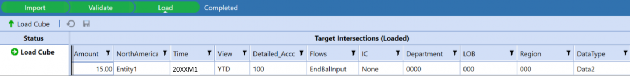
Figure 6.46
Notice that both loads appear successful.
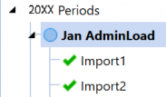
Figure 6.47
Notice that the Cube View retains the data.
Figure 6.48
Work the Workflow › Workflow Channels › Workflow Channel Use Cases › Imports of the Same Base Input
Cube Data Unit is the Same, but Workflow Data Unit Has Different Accounts
If both steps load to a different account, the system will not clear and will keep them both instead.
| Standard Workflow Channel | ||||||||
|---|---|---|---|---|---|---|---|---|
| WF1 (Import1) | WF2 (Import2) | End Result (Keep Both) | ||||||
| Symbol | Member | Symbol | Member | Symbol | Member | Member | ||
| E# | Entity1 | E# | Entity1 | E# | Entity1 | Entity1 | ||
| C# | Local | C# | Local | C# | Local | Local | ||
| S# | Actual | S# | Actual | S# | Actual | Actual | ||
| T# | 20XXM1 | T# | 20XXM1 | T# | 20XXM1 | 20XXM1 | ||
| A# | 110 | A# | 100 | A# | 110 | 100 | ||
| F# | EndBalInput | F# | EndBalInput | F# | EndBalInput | EndBalInput | ||
| V# | YTD | V# | YTD | V# | YTD | YTD | ||
| O# | Import | O# | Import | O# | Import | Import | ||
| IC# | None | IC# | None | IC# | None | None | ||
| U1# | 0000 | U1# | 0000 | U1# | 000 | 000 | ||
| U2# | 000 | U2# | 000 | U2# | 000 | 000 | ||
| U3# | 000 | U3# | 000 | U3# | 000 | 000 | ||
| U4# | Data1 | U4# | Data2 | U4# | Data1 | Data2 | ||
| U5# | None | U5# | None | U5# | None | None | ||
| U6# | None | U6# | None | U6# | None | None | ||
| U7# | None | U7# | None | U7# | None | None | ||
| U8# | None | U8# | None | U8# | None | None | ||
| Amount | 10 | Amount | 15 | Amount | 10 | 15 | ||
Figure 6.49
WF1 loaded successfully.
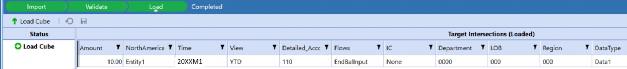
Figure 6.50
The Cube View shows WF1’s intersections.
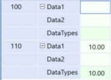
Figure 6.51
WF2 loaded successfully.
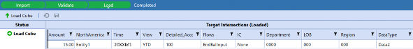
Figure 6.52
Notice that both loads appear successful.
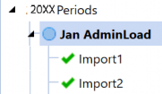
Figure 6.53
Notice that the Cube View retains the data.
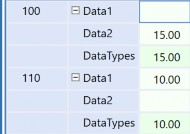
Figure 6.54
Work the Workflow › Workflow Channels › Workflow Channel Use Cases › Imports of the Same Base Input
Cube Data Unit is the Same, but Workflow Data Unit has the Same Account and a Different Flow
If Load Overlapped Siblings = True on the parent (AdminLoad), then this will allow for accumulation based on the Entity and Origin members. In other words, we prevent a last-one-loaded-wins situation.
If both steps load to a different Flow member but with the same accounts, and there is the standard workflow channel implemented, the system will keep both.
| Standard Workflow Channel | ||||||||
|---|---|---|---|---|---|---|---|---|
| WF1 (Import1) | WF2 (Import2) | End Result (Keep Both) | ||||||
| Symbol | Member | Symbol | Member | Symbol | Member | Member | ||
| E# | Entity1 | E# | Entity1 | E# | Entity1 | Entity1 | ||
| C# | Local | C# | Local | C# | Local | Local | ||
| S# | Actual | S# | Actual | S# | Actual | Actual | ||
| T# | 20XXM1 | T# | 20XXM1 | T# | 20XXM1 | 20XXM1 | ||
| A# | 110 | A# | 100 | A# | 110 | 100 | ||
| F# | EndBalInput | F# | Example2 | F# | EndBalInput | Example2 | ||
| V# | YTD | V# | YTD | V# | YTD | YTD | ||
| O# | Import | O# | Import | O# | Import | Import | ||
| IC# | None | IC# | None | IC# | None | None | ||
| U1# | 0000 | U1# | 0000 | U1# | 000 | 000 | ||
| U2# | 000 | U2# | 000 | U2# | 000 | 000 | ||
| U3# | 000 | U3# | 000 | U3# | 000 | 000 | ||
| U4# | Data1 | U4# | Data2 | U4# | Data1 | Data2 | ||
| U5# | None | U5# | None | U5# | None | None | ||
| U6# | None | U6# | None | U6# | None | None | ||
| U7# | None | U7# | None | U7# | None | None | ||
| U8# | None | U8# | None | U8# | None | None | ||
| Amount | 10 | Amount | 15 | Amount | 10 | 15 | ||
Figure 6.55
WF1 loaded successfully.
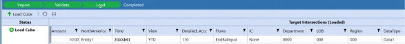
Figure 6.56
The Cube View shows WF1’s intersections.
Figure 6.57
WF2 loaded successfully.
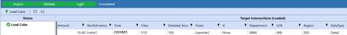
Figure 6.58
Notice that both loads appear successful.
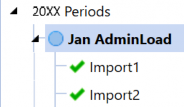
Figure 6.59
Notice that the Cube View retains the data.
Figure 6.60
Work the Workflow › Workflow Channels › Workflow Channel Use Cases
Imports of Different Base Inputs
From the examples above, we know that the sibling imports (Import1 and Import2) keep the intersections. Now, what happens if we add another import step that hits the same intersections?
This section covers the behavior between Import1 and Import3.
Figure 6.61
Work the Workflow › Workflow Channels › Workflow Channel Use Cases › Imports of Different Base Inputs
Cube Data Unit and Workflow Data Unit Combinations are the Same
If there is a standard workflow channel for WF1 (Import1) and WF3 (Import3), and their cube Data Unit and workflow Data Unit combinations are the same, the system will replace and clear, and take the last one loaded.
| Standard Workflow Channel | ||||||||
|---|---|---|---|---|---|---|---|---|
| WF1 (Import1) | WF3 (Import3) | End Result (Last Load Wins) | ||||||
| Symbol | Member | Symbol | Member | Symbol | Member | Member | ||
| E# | Entity1 | E# | Entity1 | E# | Entity1 | Entity1 | ||
| C# | Local | C# | Local | C# | Local | Local | ||
| S# | Actual | S# | Actual | S# | Actual | Actual | ||
| T# | 20XXM1 | T# | 20XXM1 | T# | 20XXM1 | 20XXM1 | ||
| A# | 100 | A# | 100 | A# | 100 | 100 | ||
| F# | EndBalInput | F# | EndBalInput | F# | EndBalInput | EndBalInput | ||
| V# | YTD | V# | YTD | V# | YTD | YTD | ||
| O# | Import | O# | Import | O# | Import | Import | ||
| IC# | None | IC# | None | IC# | None | None | ||
| U1# | 0000 | U1# | 0000 | U1# | 000 | 000 | ||
| U2# | 000 | U2# | 000 | U2# | 000 | 000 | ||
| U3# | 000 | U3# | 000 | U3# | 000 | 000 | ||
| U4# | Data1 | U4# | Data2 | U4# | Data1 | Data2 | ||
| U5# | None | U5# | None | U5# | None | None | ||
| U6# | None | U6# | None | U6# | None | None | ||
| U7# | None | U7# | None | U7# | None | None | ||
| U8# | None | U8# | None | U8# | None | None | ||
| Amount | 10 | Amount | 15 | Amount | 10 | 15 | ||
Figure 6.62
WF1 loaded successfully.
Figure 6.63
The Cube View shows WF1’s intersections.
Figure 6.64
WF3 loaded successfully.
Figure 6.65
Notice that both loads appear successful.
Figure 6.66
Notice that the Cube View cleared the 10 and kept the last load of 15.
Figure 6.67
If we go back to Import1 and reload to the cube, the 10 amount appears and the 15 disappears.
Figure 6.68
If we need both intersections, then we need to implement a UD workflow channel on UD4 in addition to possibly setting up a central import step – set to AllChannelInput – because of where the workflow steps are in this structure.
Let’s go ahead and create two workflow channels – Data1 and Data2 – and enable UD4 as the workflow channel on Application Properties. Then, update the account member to NoDataLock and the UD4 members with Data1 and Data2 as the workflow channels. Then, apply the workflow channels to the Import1 and Import3 profiles.
Reload the data files, and the end result is now…
Figure 6.69
Work the Workflow › Workflow Channels › Workflow Channel Use Cases › Imports of Different Base Inputs
Cube Data Unit is the Same, but Workflow Data Unit has Different Accounts
If both steps load to a different account and there is standard workflow channel, the system will not clear based on how the workflow structure is set up.
| Standard Workflow Channel | ||||||||
|---|---|---|---|---|---|---|---|---|
| WF1 (Import1) | WF3 (Import3) | End Result (Keep Both) | ||||||
| Symbol | Member | Symbol | Member | Symbol | Member | Member | ||
| E# | Entity1 | E# | Entity1 | E# | Entity1 | Entity1 | ||
| C# | Local | C# | Local | C# | Local | Local | ||
| S# | Actual | S# | Actual | S# | Actual | Actual | ||
| T# | 20XXM1 | T# | 20XXM1 | T# | 20XXM1 | 20XXM1 | ||
| A# | 100 | A# | 110 | A# | 100 | 110 | ||
| F# | EndBalInput | F# | EndBalInput | F# | EndBalInput | EndBalInput | ||
| V# | YTD | V# | YTD | V# | YTD | YTD | ||
| O# | Import | O# | Import | O# | Import | Import | ||
| IC# | None | IC# | None | IC# | None | None | ||
| U1# | 0000 | U1# | 0000 | U1# | 000 | 000 | ||
| U2# | 000 | U2# | 000 | U2# | 000 | 000 | ||
| U3# | 000 | U3# | 000 | U3# | 000 | 000 | ||
| U4# | Data1 | U4# | Data2 | U4# | Data1 | Data2 | ||
| U5# | None | U5# | None | U5# | None | None | ||
| U6# | None | U6# | None | U6# | None | None | ||
| U7# | None | U7# | None | U7# | None | None | ||
| U8# | None | U8# | None | U8# | None | None | ||
| Amount | 10 | Amount | 15 | Amount | 10 | 15 | ||
Figure 6.70
WF1 Loaded successfully.
Figure 6.71
For demonstration purposes, I simply clicked on Load Cube again on Import1. Because of my setup between Import1 and Import2, my Cube View will show both as loaded, as these intersections are contained in the same base input.
WF2 loaded intersections.
Figure 6.72
Figure 6.73
WF3 loaded successfully.
Figure 6.74 Notice that the Cube View kept all three loads.
Figure 6.75
Work the Workflow › Workflow Channels › Workflow Channel Use Cases › Imports of Different Base Inputs
Cube Data Unit is the Same, but Workflow Data Unit has the Same Account and a Different Flow
If Load Overlapped Siblings = True on the parent (AdminLoad), then this will allow for accumulation based on the Entity and Origin members.
If both steps load to a different Flow member but with the same accounts, and there is just the standard workflow channel implemented, the system will clear and replace.
| Standard Workflow Channel | ||||||||
|---|---|---|---|---|---|---|---|---|
| WF1 (Import1) | WF3 (Import3) | End Result (Last Load Wins) | ||||||
| Symbol | Member | Symbol | Member | Symbol | Member | Member | ||
| E# | Entity1 | E# | Entity1 | E# | Entity1 | Entity1 | ||
| C# | Local | C# | Local | C# | Local | Local | ||
| S# | Actual | S# | Actual | S# | Actual | Actual | ||
| T# | 20XXM1 | T# | 20XXM1 | T# | 20XXM1 | 20XXM1 | ||
| A# | 100 | A# | 100 | A# | 100 | 100 | ||
| F# | EndBalInput | F# | Example2 | F# | EndBalInput | Example2 | ||
| V# | YTD | V# | YTD | V# | YTD | YTD | ||
| O# | Import | O# | Import | O# | Import | Import | ||
| IC# | None | IC# | None | IC# | None | None | ||
| U1# | 0000 | U1# | 0000 | U1# | 000 | 000 | ||
| U2# | 000 | U2# | 000 | U2# | 000 | 000 | ||
| U3# | 000 | U3# | 000 | U3# | 000 | 000 | ||
| U4# | Data1 | U4# | Data2 | U4# | Data1 | Data2 | ||
| U5# | None | U5# | None | U5# | None | None | ||
| U6# | None | U6# | None | U6# | None | None | ||
| U7# | None | U7# | None | U7# | None | None | ||
| U8# | None | U8# | None | U8# | None | None | ||
| Amount | 10 | Amount | 15 | Amount | 10 | 15 | ||
Figure 6.76
WF1 and WF2 loaded successfully, and this is reflected in the Cube View.
Figure 6.77
WF3 loaded successfully.
Figure 6.78
Notice that the Cube View cleared what was loaded to EndBalInput.
Figure 6.79
If we need both intersections, then we need to implement a UD workflow channel on UD4 in addition to possibly setting up a central import step – set to AllChannelInput – because of where the workflow steps are in this structure.
Work the Workflow › Workflow Channels › Workflow Channel Use Cases
Additional Use Cases for Workflow Channels
Workflow channels can be applied to forms and journals as well. Adding workflow channels to forms allows the individual workflow forms steps to be locked. Without the workflow channel, however, locking one form will inadvertently lock all form steps – especially if there are multiple form steps – under the given period and Workflow Profile. In the example below (Figure 6.80), the base input Workflow Profile has Forms and Forms2 completed, representing the multiple form steps under a given Workflow Profile (base input). The moment I click Lock, both Forms and Forms2 will be locked.
Figure 6.80
Work the Workflow › Workflow Channels
Common Troubleshooting on Workflow Channels
This section covers common errors when implementing workflow channels and steps to resolve them. Examples include not being able to update a workflow channel on a metadata member, and various validation error messages when importing to an import step with workflow channels.
Work the Workflow › Workflow Channels › Common Troubleshooting on Workflow Channels
Not Able to Update the Workflow Channel on my UD Base Member
Did you enable the UD dimension on your Application Properties?
By default, if you aren’t explicitly assigning a UD for your workflow channel in Application Properties, the Workflow Channel row in your UD member will be greyed out.
Figure 6.81
Go to Application Properties > General > (Default) Scenario Type.
Figure 6.82
Here, (Not Used) is assigned to my UD Dimension Type for Workflow Channels. Thus, in this case, checking Application Properties allows the administrator to determine whether a UD dimension type is being used for workflow channels.
Work the Workflow › Workflow Channels › Common Troubleshooting on Workflow Channels
Validation Error Message #1: “The Data Cell is read-only…”
You may receive an error message along the lines of the following…
Error Message: “The Data Cell is read-only because the Parent Workflow Profile ‘XXX’ has no active Input Profiles for the Workflow Channels that are assigned to the Data Cell’s Account and/or UD member. Entity=X,Account=Y,Origin=Import”
This error message might occur on your import step when trying to validate. Checks to perform:
Check that the account is set to NoDataLock. Remember, NoDataLock takes the account member out of the workflow channel process and allows the account to be used across any Workflow Profile no matter what workflow channel is assigned (must always be NoDataDock if using a UD workflow channel).
Check that the workflow channel is assigned to the profile import step (e.g., WF1 and WF3).
Check that the profile import step is active (e.g., WF1 and WF3).
Check that there is a “central import” that is active and set to AllChannelInput under the parent Workflow Profile (e.g., AdminLoad).
This profile needs to be AllChannelInput and set to Active to resolve the validation error. It does not matter that Can Load Unrelated Entities is set to False.
If additional workflow channels are created, ensure that the workflow channels are applied to the relevant metadata members and Workflow Profile steps.
Note: After establishing the new workflow channels (e.g., AllChannelInput), the administrator may be required to re-import the data source for the changes to apply when going through the remaining validate and load steps. |
Work the Workflow › Workflow Channels › Common Troubleshooting on Workflow Channels
Validation Error Message #2: “Cannot load data into …”
Error Message: “Cannot load data to account… because it is not assigned to Workflow Channel ‘…’ or because the account is invalid for the specified Cube”
This error message might also occur on your import step when trying to validate. Checks to perform, especially if a UD workflow channel is used:
Check that the account is set to NoDataLock on the specified Scenario Type.
Check for any new accounts that haven’t been assigned the workflow channel NoDataLock.
Work the Workflow › Workflow Channels › Common Troubleshooting on Workflow Channels
Troubleshooting Inputs on Forms and Adj
1. If you get an error where you are unable to input through forms, even though you have an AllChannelInput set on the forms step, you may want to check that the default workflow has the AllChannelInput applied to the relevant step (e.g., AllChannelInput, AllChannelForms, AllChannelAdj) with the Profile Active = True.
As a general rule, we typically recommend not touching the default workflow except for changing the security groups (e.g., administrators) for a maintenance group. This section is a very specific exception and could occur if you have several complicated import, forms, and adj steps setup.
It may be useful to set the Workflow Name as Central Form Input or Central Import, as this is what the AllChannelInput will represent. Figure 6.83 offers an example of the default workflow set with AllChannel for Import.
Figure 6.83
Remember that the default workflow is the one with the triangle icon next to it. Each workflow suffix created for a cube by Scenario Type will generate a default template by the suffix. Figure
6.84 is an example of the default workflow set with AllChannel for Forms.
Figure 6.84
Meanwhile, Figure 6.85 is an example of the default workflow set with AllChannel for Adj.
Figure 6.85
Work the Workflow
Locking and Unlocking Workflows
To ensure we are all on the same page, this section defines “locking” as “preventing users from importing or adjusting data via forms or journals into a given period”. Since a lot of users access their tasks through OnePlace, via workflow, then locking the workflow accomplishes this.
When data is locked (explicitly or implicitly), the workflow engine will not allow any form of data input to the entities assigned to the Workflow Profile type.
Explicit Locks: An explicit entity data lock is created when a workflow is locked, thereby locking its assigned entity(s) for the scenario and time associated with the Workflow Profile type.
Implicit Locks: An implicit entity data lock is created when a workflow’s parent workflow has been certified. Implicit locks are created to ensure that once a higher-level workflow is certified, the underlying entity data cannot be changed. Implicit locks can be cleared by un-certifying the Workflow Profile type.
Workflow Only Locks: If a Workflow Profile type is locked and the Workflow Profile type does not have assigned entities, all workflow processing is blocked, even though there
are no entity locks placed. However, this will not necessarily prevent users from entering inputs by other means (e.g., submit cells). If there are assigned entities to the workflow, then locking that workflow step will prevent users from further input. For the cases where there are no entity assignments, you can set up security in such a way that a user would not be able to enter data (I recommend thorough testing to see if slice security is sufficient before diving into other alternatives; for example, a custom conditional input rule).
| Tip: Locking workflows can prove especially useful if there are assigned entities, because they prevent users from submitting through Excel to those entities. |
Work the Workflow › Locking and Unlocking Workflows
Lock Workflow
This section covers a few options on how to lock a workflow, which you can do by right-clicking on the Workflow Profile or through workflow multi-period processing.
For the right-click and lock, navigate to the relevant Workflow Profile. Right-click on the selected month for the given Workflow Profile and click Lock.
Figure 6.86
| Tip: If you click on Status & Assigned Entities instead, you can view dependent workflow steps without navigating to each workflow. This allows you to see a summary of which steps are complete. |
If you want to use workflow multi-period processing, you navigate to OnePlace. Click on the XXXX Periods. This will bring up Workflow Multi-Period Processing. Now you can batch process select workflow steps!
Figure 6.87
When locking, forms will gain a lock icon for relevant cells, as presented in Figure 6.88. Furthermore, you will also receive an error message when attempting to post or unpost a journal to a locked period.
Figure 6.88
Work the Workflow › Locking and Unlocking Workflows
Unlock Workflow
This section covers methods to unlock a workflow, such as individually unlocking each workflow, leveraging Status & Assigned Entities to unlock descendants of a workflow, and the workflow multi-period processing.
To individually unlock each workflow, you can navigate to the specific workflow, right-click on the relevant month and select Unlock.
To unlock descendants of a workflow, navigate to the relevant Workflow Profile type. Right-click on the month and click on Status & Assigned Entities. Within the Workflow Status window, right-click on any of the steps to unlock. You can unlock the workflow and all descendants by right-clicking on the Workflow Parent > Unlock Descendants > All.
Figure 6.89
Figure 6.90
To use workflow multi-period processing, navigate to OnePlace. Click on the XXXX Periods. This will bring up Workflow Multi-Period Processing to batch the unlocking (Figure 6.87).
Work the Workflow › Locking and Unlocking Workflows
Consolidations and Rules Impact on Locked Periods
This section covers how running a consolidation or business rule can impact your locked periods.
Work the Workflow › Locking and Unlocking Workflows › Consolidations and Rules Impact on Locked Periods
Consolidation
When a User runs a consolidation, you cannot stop the process from impacting previously locked periods. The end result figures should not change, assuming you properly tested your Member Formulas and custom business rules. It is recommended that end-users should only consolidate data from their workflow process; this will ensure that when they sign-off on their workflow process, the relevant entities’ status and numbers are up to date regardless of subsequent consolidations.
A Force Consolidate will consolidate all entities of the selected Data Unit being processed, irrespective of the calculation status. If a force consolidate runs and a business rule has been changed without following the above instructions (varying by time), the previous months in the current year could be impacted by the rule change. Keep this risk in mind; it can be avoided by always ensuring your rules are modified by time.
A Consolidate will consolidate up to the selected current period depending on the calculation status of the entities of the Data Unit being processed. It checks the calculation status on each entity and consolidates only what it needs to. In other words, any entities that have a calculation status of OK or OK, MC will not be calculated or translated during the consolidation.
Work the Workflow › Locking and Unlocking Workflows › Consolidations and Rules Impact on Locked Periods
Rules
Member Formula updates should leverage the use of Scenario Type and time. For example, you could have a Member Formula written to the default Scenario Type and time and then future updates can be applied to a particular Scenario Type and time. Text properties (often used when writing logic) can, and sometimes should, vary by Scenario Type and time.
Depending on the business rule, you can have specific Scenario Types and times used as conditions, or if the business rule is already associated with a data management step or sequence, you can have the business rule run off the scenario and time defined in the data management step or sequence.
Work the Workflow › Locking and Unlocking Workflows
Workflow Open and Closed State
The open and closed states of a Workflow Profile should not be used as a substitute for the locking/unlocking capability that we discussed in the earlier sections. The open and closed states are used to truly deprecate workflow hierarchy structures where you still want to retain the data used through those Workflow Profiles but no longer want users accessing them. When the workflow is set to close, the workflow engine will take a snapshot of the current workflow hierarchy structure and store it in a historical audit table for the scenario and time being closed. This also means the workflow hierarchy is not accessed from memory (cache), as would be the case with a workflow in an open state. A closed workflow must be read from the database rather than memory because it is considered a point-in-time snapshot stored in a historical table. This is a performance penalty, noticeable when reading the entire closed workflow hierarchy for a scenario and time.
Open State: The workflow is available, and locking is controlled at the individual Workflow Profile level. This also means the workflow hierarchy is accessed from memory (cache) rather than being read from the database, which provides very fast read performance.
Closed State: This triggers the workflow engine to place a high-level lock on the workflow. The closed state trumps individual Workflow Profile lock status values, and the workflow level will display a black circle to indicate a closed workflow.
If you ever wanted to access open and close functionality, you can access it through the cube root profile on the XXXX periods selection or by the selected period.
Figure 6.91
Figure 6.92
Workflow hierarchies should only be closed if major changes are being made to the workflow hierarchy and the structure of a cube and historical hierarchy relationships need to be preserved. Again, we recommend keeping workflows open due to the performance impact mentioned above.
Work the Workflow
Common Troubleshooting on Workflow Profiles
Many troubleshooting issues related to Workflow Profiles stem from implementing new processes on top of existing processes within OneStream. This section covers some of the common “issues” or considerations related to workflows and setup.
Work the Workflow › Common Troubleshooting on Workflow Profiles
“Active” Profiles
Common issues regarding “active” profiles include, but are not limited to:
Creating the profile step, but users say they can’t see this step through OnePlace. This issue may be due to security, or the profile not being set as active.
Attaching a form/journal/dashboard to a workflow step, but users don’t see it on OnePlace.
This may be due to security, or the profile not being set as active.
Users are unable to see certain Cube Views through OnePlace, but these same Cube Views are used as part of the forms channel, which is set to active. This could be due to security, or if you are using Cube Views, check that the Cube View is part of a Cube View profile and that the Cube View profile is set to be used in OnePlace.
Users cannot input to forms. Ensure that the forms step is set to active and – if assigned entities are used – ensure that they are properly assigned. Check that the Cube View used for the form is enabled for modifications (e.g., Can Modify Data set as True and check whether this setting is appropriate on the overall Cube View, its individual rows, or its individual columns).
Work the Workflow › Common Troubleshooting on Workflow Profiles
Security
When someone asks me why a profile step isn’t showing up through OnePlace, my immediate thought goes to security. Ensure that the user is active in the application, assigned to the relevant security group, and the security group is attached to the right profile. Ensure that the workflow step created has Profile Active set to True on the relevant Scenario Type.
Work the Workflow › Common Troubleshooting on Workflow Profiles
Tips and Tricks on Workflow
General titbits an administrator should know about workflow:
Be mindful of how you name your workflows. Workflow Profile names must be unique across the application. If there are multiple cubes using the Scenario Type, consider adding a cube indicator (such as a letter or even the cube name) to the Workflow Profile name.
Once data is loaded into the given Workflow Profile type, you cannot delete the Workflow Profile type unless all the data that has been loaded via that given workflow for all time periods and Scenario Types has been cleared.
If you click on the ultimate top cube (the icon with the cube), there is a Grid View tab you can use to make mass updates. This assumes you don’t want to use the template upload.
Figure 6.93
Mass processes through OnePlace. Click on the XXXX Periods. This will bring up workflow multi-period processing, which will allow you to batch locks/unlocks, clear source data, validate, and load data.
Mass processes through the cube root Workflow Profile. This is similar to the above workflow multi-period processing, but the difference is that you can see every workflow step under your cube root Workflow Profile. To access, all you have to do is click on your cube root profile, the one where the icon is a cube:
Figure 6.94
If you have a month selected, you will be brought to a Manage Workflow interface, which you can use to monitor workflow steps and status.
Figure 6.95
But what we care about is the XXXX periods (in my example, 2020 Periods).
Figure 6.96
If you click on the Descendants tab, you are then able to filter on the profile type (e.g., Review, Base Input, Parent Input, Import, Adjustment, Forms).
Figure 6.97
From here, you can multi-select steps to then run your batch processes.
Work the Workflow
Conclusion
This chapter covered the core components of Workflow Profiles, including the suffixes, hierarchies, and types of inputs we can create (e.g., base, parent, review).
It also showed examples of what happens if there are several import steps that could result in data clearing, as well as methods to resolve problems. Hopefully, this chapter will help you leverage workflow to your company’s processes and responsibilities in the best possible way!